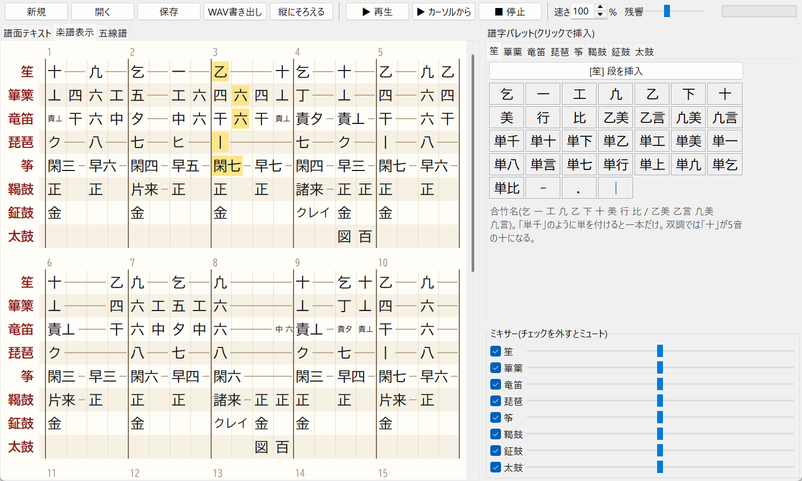
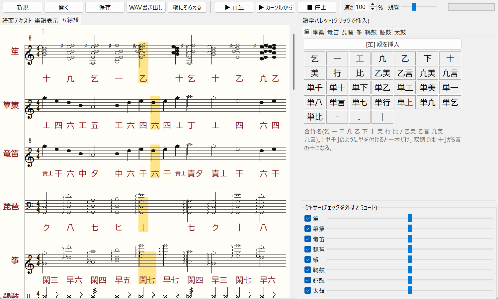
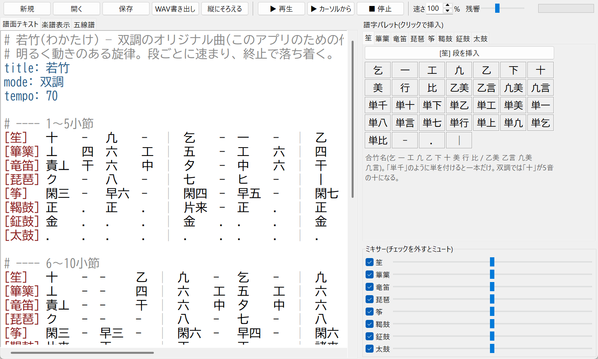

聴いてみる
どの曲も、笙・篳篥・竜笛・琵琶・筝・鞨鼓・鉦鼓・太鼓をこのアプリで合成しています。録音ではありません。
越天楽 平調
雅楽を代表する古典曲。このアプリで採譜を進めている版です。
約1分39秒。採譜中のため、17小節目以降は笙・篳篥・竜笛だけで、ほかのパートはまだ入っていません。若竹 双調
明るく動きのある旋律で、段ごとに速まり終止で落ち着きます。
約53秒。このアプリのために作ったオリジナル曲(古典曲ではありません)。朝霞 壱越調
ゆっくり始まって次第に速まり、最後の小節で緩みます。
約1分24秒。このアプリのために作ったオリジナル曲(古典曲ではありません)。月影 黄鐘調
前奏は笙と竜笛だけでゆったりと始まり、5小節目から全員が加わります。
約1分10秒。このアプリのために作ったオリジナル曲(古典曲ではありません)。雅楽の打ち込み(DTM)を、譜字のままで
雅楽譜プレイヤーは、雅楽の曲を打ち込んで鳴らすためのソフトウェアです。一般的な DTM では、DAW に雅楽の音源を入れ、五線譜やピアノロールに音を置き換えて打ち込みます。このアプリでは、合竹や篳篥・竜笛の譜字、琵琶の柱、筝の弦名を、雅楽の譜面に書かれているとおりにテキストで打ち込めます。それだけで、笙・篳篥・竜笛・琵琶・筝・鞨鼓・鉦鼓・太鼓の合奏として再生されます。
音はすべてアプリの中で合成するので、DAW や音源ソフトを別に買う必要はありません。笙の手移り、篳篥の塩梅、琵琶の掻撥、鞨鼓の来といった雅楽ならではの奏し方を、自動で付けて鳴らします。採譜した曲の確認や、合奏の中での各パートの聴き比べ、雅楽の練習・学習にも使えます。打ち込んだ曲は WAV に書き出して、ほかの DTM ソフトや動画で使えます。
できること
- 笙
- 篳篥
- 竜笛
- 琵琶
- 筝
- 鞨鼓
- 鉦鼓
- 太鼓
譜字のまま入力
合竹(乞 一 工 凢 …)、篳篥・竜笛の譜字、琵琶の柱、筝の弦名、正・来・百・図などを、そのままテキストで書けます。譜字パレットからクリックでも入力できます。
雅楽らしい奏し方
笙は手移りで共通の竹を鳴らし続け、篳篥は塩梅で音をつなぎます。同じ譜字が続くところは吹き直して切れ目を付けます。琵琶の掻撥、筝の閑掻・早掻、鞨鼓の来(テンポに連動)も再現します。
六つの調子
壱越調・平調・双調・黄鐘調・盤渉調・太食調に対応。平調では篳篥の舌・丄をメリで下げて吹きます。
縦にそろう譜面
譜面テキストは1段5小節で全楽器が上下に並び、拍の頭が縦にそろうよう自動で整形されます。
楽譜表示・五線譜
拍をそろえた総譜と、字譜つきの五線譜を表示。再生中は鳴っている音がハイライトされます。
テンポ変化・WAV 書き出し
次第に速まる雅楽のテンポを tempo= で書けます。演奏は WAV ファイルに書き出せます。
拍子と小節の間(ま)
1小節の拍数を入力欄で変えると、譜面も楽譜も区切り直されます。「小節の間(ま)」をオンにすると、小節の終わりごとに間を取り、その間は鳴っている音を延ばします。
琵琶の掻撥と同時弾き
掻撥は音の長さに合わせて、4本なら6等分、3本なら4等分した位置で鳴らします。一+ク のように書くと別々の弦を同時に弾きます。
最近の更新
- 小節の間(ま) — 小節の終わりに間を挟み、鳴っている音を延ばすモードを追加(ヘッダ
ma:)。 - 1小節の拍数 — ツールバーで拍数を変えると、譜面テキスト・楽譜表示・五線譜を区切り直す(ヘッダ
beats:)。 - 延ばしの拍数指定 —
-:2や-:1/2で延ばす長さを書ける。 - 琵琶 — 別々の弦を同時に鳴らす
一+クを追加。掻撥は音の長さを、4本なら6等分の1・3・4・5番目、3本なら4等分の1・2・3番目で鳴らす。 - 篳篥・竜笛 — 同じ譜字が続くときは息を止めて吹き直し、切れ目をはっきりさせた。篳篥は基音を強めて音の高さを聞き取りやすくした。平調では舌に加えて丄もメリで下げる。
- 鞨鼓 — 来(片来・諸来)の連打をゆるやかにし、速さをテンポに連動させた。
- 不具合の修正 — 起動時に譜面の欄が隠れてしまうことがある問題、楽譜表示・五線譜タブを開いたままファイルを開くと前の譜面が残る問題を直した。
※ これらの更新は pip 版 0.2.0(2026年10月18日公開)から入っています。すでに入れている場合は pip install -U gagaku-player で更新できます。
画面



譜面の書き方
UTF-8 のテキストファイル(拡張子 .gaku)に、ヘッダと楽器ごとの行を書きます。
title: 若竹 mode: 双調 tempo: 70 [笙] 十 - 凢 - | 乞 - 一 - | [篳篥] 丄 四 六 工 | 五 - 工 六 | [竜笛] 責丄 干 六 中 | 夕 - 中 六 | [琵琶] ク - 八 - | 七 - ヒ - | [筝] 閑三 - 早六 - | 閑四 - 早五 - | [鞨鼓] 正 . 正 . | 片来 - 正 . |
| 譜字 | 1拍 |
|---|---|
| 譜字:2 / 譜字:1/2 | 長さを拍で指定 |
| - | 直前の音を1拍延ばす(-:2 -:1/2 のように拍数も指定できる) |
| . | 1拍休み(.:2 のように長さも指定できる) |
| | | 小節線 |
| tempo=72 | その位置からテンポを変える |
| 譜字' / 譜字, | 1オクターブ上 / 下(竜笛の責は 責六 とも書ける) |
| 一+ク | 琵琶で別々の弦を同時に鳴らす |
| beats: 3 | (ヘッダ)1小節の拍数。この拍数ごとに小節を区切る |
| ma: 1 | (ヘッダ)小節の間(ま)の長さ(拍)。書かなければ間なし |
詳しい書式と、楽器ごとの譜字の一覧は README を見てください。
インストール
Python 3.10 以上が入っていれば、pip で入れられます(PyPI)。
pip install gagaku-player gagaku-player --demo
新しい版に更新するときは pip install -U gagaku-player です。
ソースから動かす場合:
- Python 3.10 以上を入れる。
- このアプリをダウンロードして展開する(または
git clone https://github.com/ZiTengXiang/gagaku-player.git)。 - 展開したフォルダで次を実行する。
pip install -r requirements.txt python main.py examples/wakatake_sojo.gaku
Windows では追加のインストールなしで再生できます。macOS・Linux で再生するには pip install sounddevice も必要です。
音高と調弦について
基準ピッチは A4 = 430 Hz です。笙・篳篥・竜笛の音高は公開資料の表に基づいています。楽琵琶・楽箏の調子ごとの調弦は出典が見つからなかったため、主音と音階から組んだ暫定値です(gagaku/tunings.json で書き換えられます)。閑掻・早掻・掻撥・来などの奏法も、手順を簡略化した近似です。正しい調弦や奏法をご存じの方は、GitHub の Issues で教えていただけると助かります。
よくある質問
- 雅楽の打ち込み(DTM)に使えますか?
- はい。譜字をテキストで打ち込むと、そのまま合奏として再生できます。テンポ変化、1小節の拍数、小節の間(ま)も設定でき、仕上がった演奏は WAV ファイルに書き出せます。
- 無料ですか?
- 無料です。MIT ライセンスのオープンソースで、改変や再配布もできます。
- スマートフォンのアプリはありますか?
- いまはパソコン用(Windows・macOS・Linux)のデスクトップアプリだけです。Python 3.10 以上で動きます。
- どの楽器・調子に対応していますか?
- 管絃の八つの楽器(笙・篳篥・竜笛・琵琶・筝・鞨鼓・鉦鼓・太鼓)と、六つの調子(壱越調・平調・双調・黄鐘調・盤渉調・太食調)に対応しています。
- 雅楽の楽譜(譜字)が読めなくても使えますか?
- 譜字パレットから楽器ごとの譜字をクリックで入力でき、五線譜タブでは各音を五線譜で確かめられます。サンプル曲も入っているので、まずは
gagaku-player --demoで聴いてみてください。 - 音は録音ですか?
- 録音ではなく、プログラムで合成した音です。実際の楽器の音色に近づけていますが、本物の演奏とは違いがあります。
ライセンス
MIT License。改変・再配布・商用利用ができます(著作権表示を残してください)。
このサイトのアクセス解析について
このサイトでは、利用状況を知るために Google が提供するアクセス解析ツール「Google アナリティクス」を使っています。Google アナリティクスは Cookie などを使って、閲覧したページ、おおよその地域、ブラウザの種類などの情報を収集します。収集される情報に、氏名など個人を特定する情報は含まれません。情報は Google のプライバシーポリシーに基づいて管理されます。
収集を望まない場合は、ブラウザの設定で Cookie を無効にするか、Google アナリティクス オプトアウト アドオンを使ってください。詳しくは Google のサービスを使用するサイトやアプリから収集した情報の Google による使用をご覧ください。